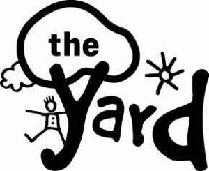
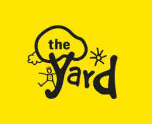

Trade Mark Journal No.2025/048 28 November 2025
UK00004288324 3 November 2025 (35,41,43,44)
Mark 1

Mark 2

- Class 35
- Administrative support and data processing services; Franchising services providing business assistance; Promoting philanthropic services.
- Class 41
- Entertainment services for children; Provision of play facilities for children; Provision of educational entertainment services for children in after school centers; Educational services provided for children; Physical health education; Educational assistance services for persons with individual needs; Educational services provided by special needs assistants; Providing information in the field of education; Health education; Providing recreational areas in the nature of play areas for children; Play schemes [entertainment/education]; Movement tuition for pre-school children; Provision of childrens' educational services through play groups; Kindergarten services [education or entertainment]; Provision of educational services relating to health; Physical-education services; Nursery school services; Adventure training for children; Adventure playground services; Children's adventure playground services.
- Class 43
- Child care services; Child care centers; Provision of before-school care; Provision of after-school care; Preschooler and infant care at daycare centers; Day care centers; Nurseries and day care centers; Creche services; Providing child care centers.
- Class 44
- Health care; Medical care; Psychological care; Provision of health care services; Learning disability screening services; Respite care (provision of); Health care relating to remedial exercise; Mental health services; Medical advice for individuals with disabilities; Medical assistance services; Services for the provision of medical care information; Providing health information; Providing mental health rehabilitation facilities; Individual and group psychology services; Psychological therapy for infants; Art therapy; Physical therapy; Charitable services, namely, providing medical services to needy persons.
Scotland Yard Adventure Centre
Representative: Alan A G Rae